buggies

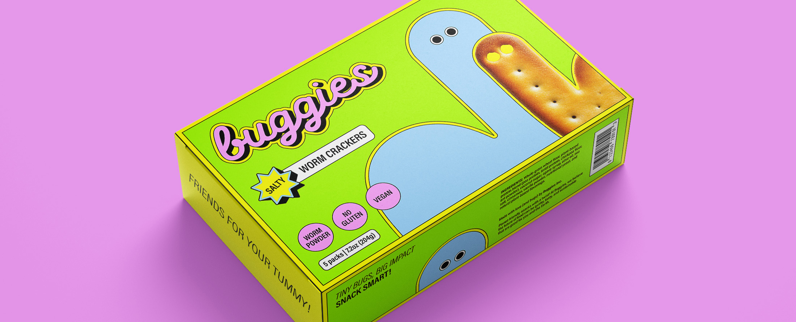
The brief focused on reimagining a food brand centered on insect protein, with the challenge of making it appealing to a Western audience.
I set out to transform what we think of as enemies or disgusting, as our very yummy friends.
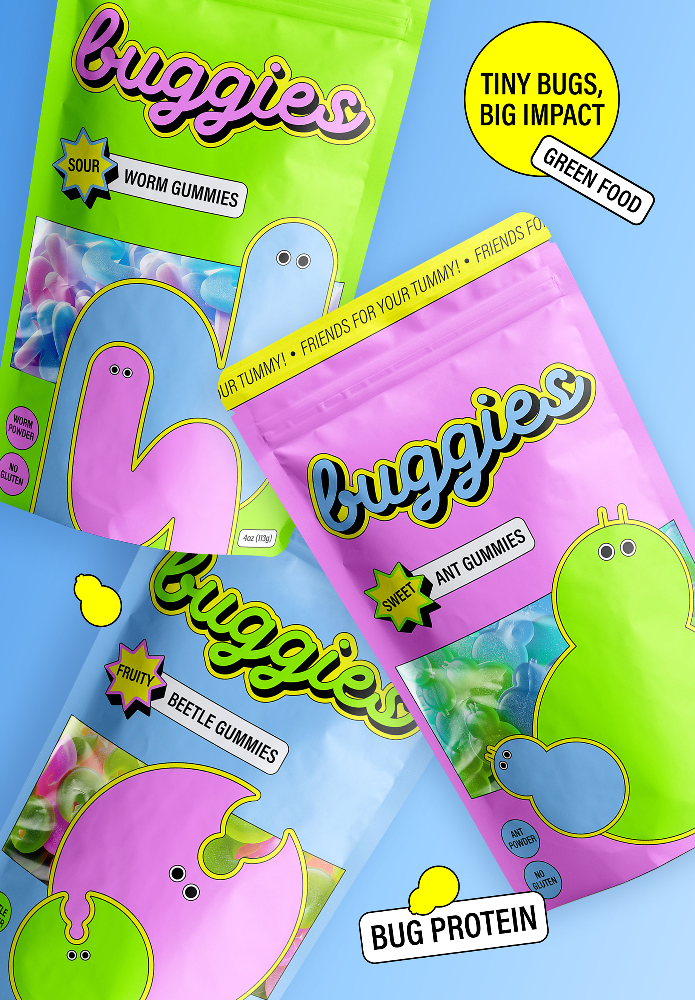
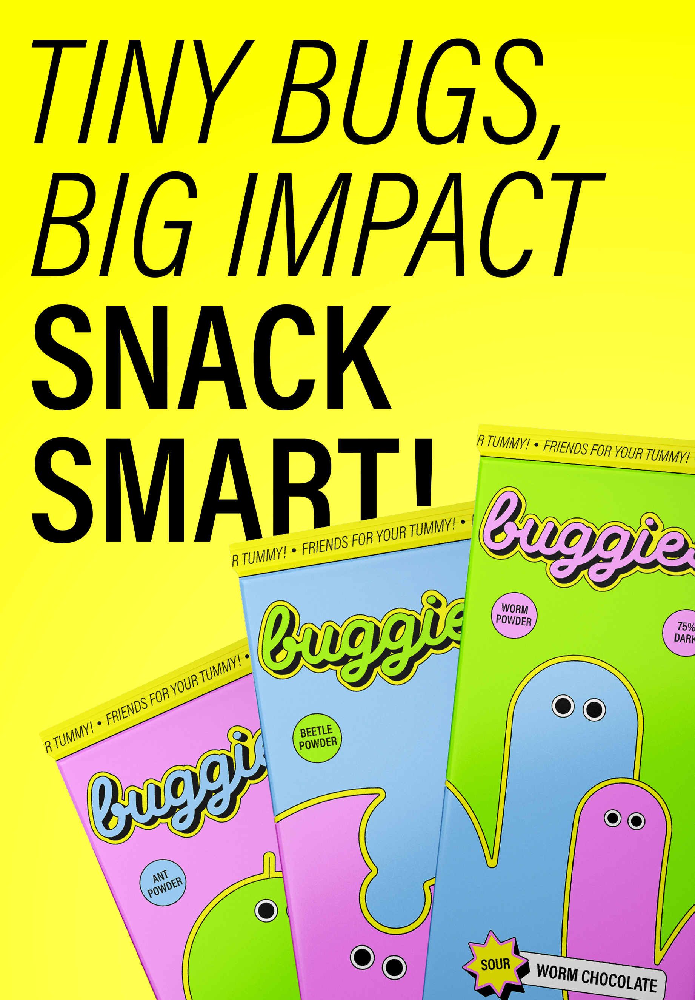
buggies is a snack line that challenges negative preconceptions around eating insects. Through a playful system and friendly illustrations, it moves away from the unpleasant and leans into the sweet and fun.
I designed three snack lines for the sustainable and innovative insect-based food brand, aimed at a young and conscious audience.
With three different insect proteins (ants, beetles and worms) used as flavors, three different snacks were created with each having their own cheeky names: Ice creams, gummies, and chocolate.
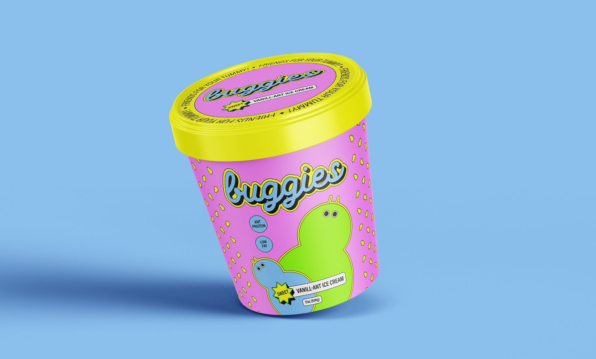
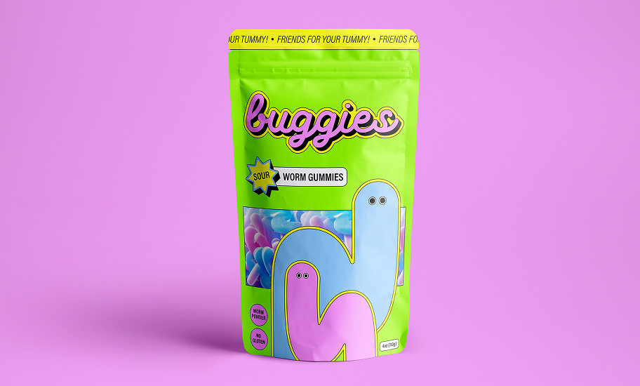
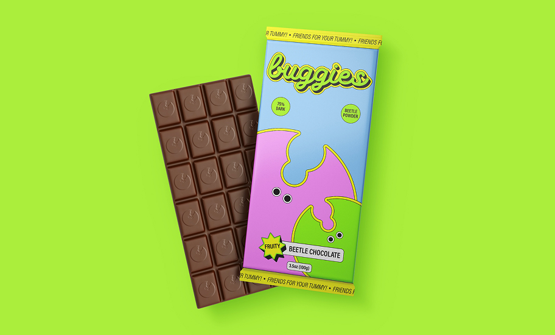
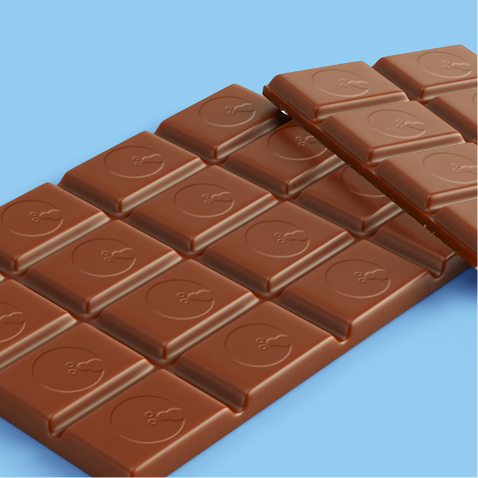
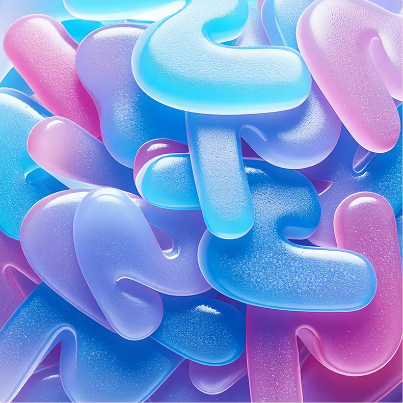
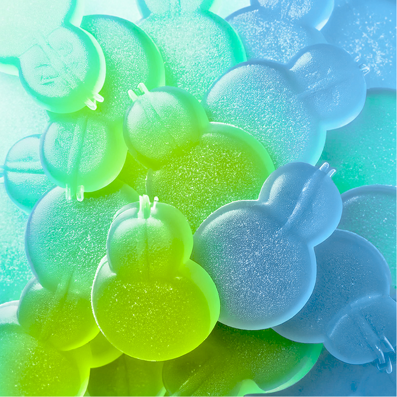
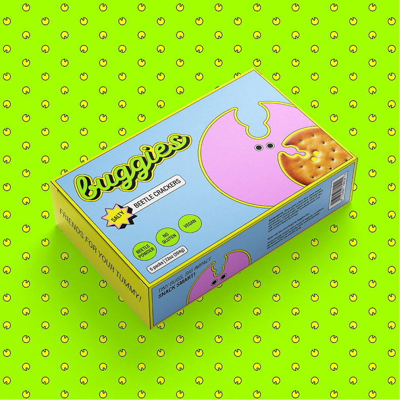
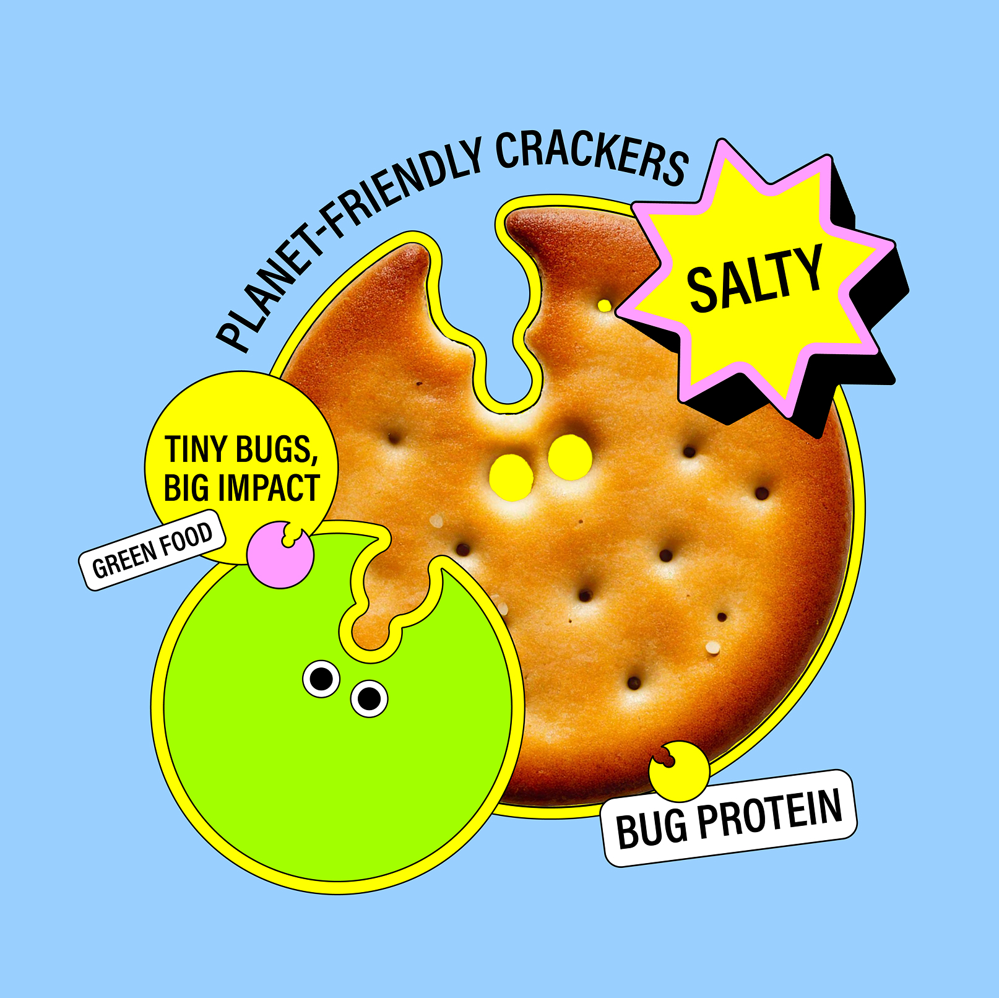
In order to appeal to a young audience, as well as to challenge the initial disgust perception of the consumers, the tone of the brand adopts a casual, friendly and eco-conscious tone that connects with the public.
By merging 'buddies' and 'bugs',
buggies was born.
Using simple linework and highly expressive eyes, the insects were illustrated in a friendly, approachable style, leaning into a cartoon-like aesthetic and avoiding unsettling details of the real-life inspiration.
A vibrant color palette reinforces the brand's sweet and playful personality, while the identity as a whole highlights the lively tone of its messaging and characters.
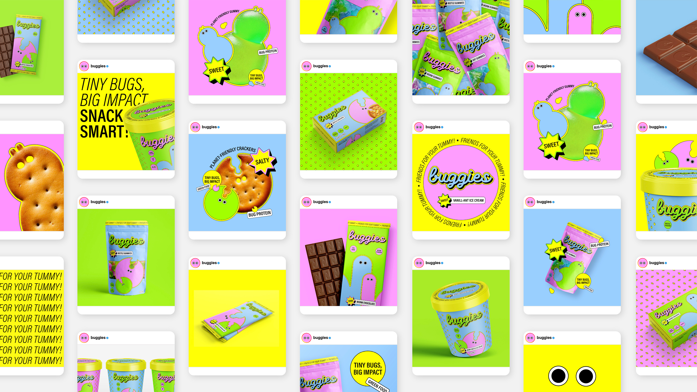
Credits
Tutors:
Anna Berbiela.
Client:
IDEP Barcelona.
HYPHA


numen